JMeter性能测试完成后，可以查看性能报告（参考JMeter性能测试：JMeter多用户并发模拟及压测结果分析），如果想查看实时的性能，可以搭建一个性能监控平台。本文介绍如何搭建JMeter性能测试的性能监控系统。
性能监控系统
JMeter性能测试报告呈现的数据是某个时间段内的平均值，而性能监控平台可以实时的查看性能数据，而且有非常友好的图形界面。
JMeter性能监控平台组成
- JMeter：性能测试工具，产生压测数据。官网地址：https://jmeter.apache.org/
- InfluxDB：一种开源分布式时序数据库，使用Go语言开发，广泛应用于处理和分析资源监控数据，用于存储压测数据。官网地址：https://grafana.com/
- Grafana：开源的度量分析与可视化工具，有非常漂亮的图表展示功能、齐全的度量仪表盘和图形编辑器，支持不用种类的数据源（比如InfluxDB和Prometheus），用于将存储于 InfluxDB中的数据以图表的形式展示出来。官网地址：https://grafana.com/
JMeter安装
InfluxDB安装
GitHub仓库地址：https://github.com/influxdata/influxdb
下载地址：https://portal.influxdata.com/downloads/
参考文档：https://docs.influxdata.com/influxdb/v2.0/get-started/
docker安装：https://hub.docker.com/_/influxdb
拉取influxDB镜像：1
$ docker pull influxdb
Grafana安装
官方文档：https://grafana.com/docs/grafana/latest/
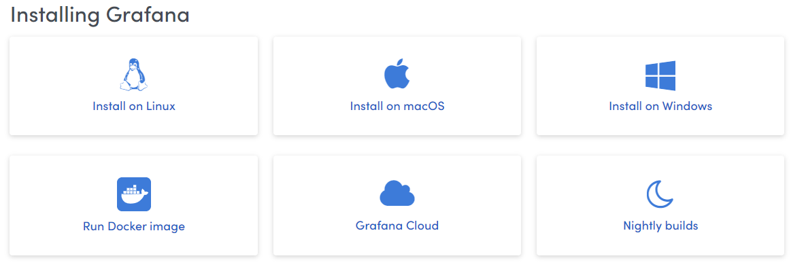
Grafana dockerhub地址：https://hub.docker.com/r/grafana/grafana
拉取镜像：1
$ docker pull grafana/grafana
查看镜像是否安装成功：1
2
3
4[root@server ~]# docker images | egrep 'grafana|influxdb'
grafana/grafana latest 13afb861111c 6 weeks ago 187MB
influxdb latest 0454d5d215cc 6 weeks ago 307MB
[root@server ~]#
性能监控平台部署
部署 InfluxDB
1. 新建容器网络1
$ docker network create grafana
2. 运行容器1
2[root@server ~]# docker run -d -p 8086:8086 --name=influxdb --network=grafana -v ${PWD}/influxdb/:/var/lib/influxdb/ influxdb:latest
aa079b4c24cfc95735613dc642c7d60064cf6c6e6c37ab561721de5825368c90
3. 创建数据库
第一种方式 : HTTP请求方式1
$ curl -i -XPOST http://localhost:8086/query --data-urlencode "q=CREATE DATABASE jmeter"
第二种方式：进入 influxdb容器终端创建
1 | [root@server ~]# docker exec -it influxdb influx |
部署 Grafana
1. 运行容器1
2
3
4
5
6[root@server ~]# docker run -d -p 3000:3000 --name=grafana --network=grafana grafana/grafana:latest
4a329f916f3182a5a742d921d1ed438ba837f57ab3955a45ff34c8e45ce236c5
[root@server ~]# docker ps
CONTAINER ID IMAGE COMMAND CREATED STATUS PORTS NAMES
4a329f916f31 grafana/grafana:latest "/run.sh" 37 seconds ago Up 32 seconds 0.0.0.0:3000->3000/tcp grafana
aa079b4c24cf influxdb:latest "/entrypoint.sh infl…" 19 minutes ago Up 19 minutes 0.0.0.0:8086->8086/tcp influxdb
2. 登录Grafana
浏览器输入URL：http://192.168.30.8:3000/
其中192.168.30.8为我的服务器地址（部署Grafana的地址），用户名和密码为admin
进入首页
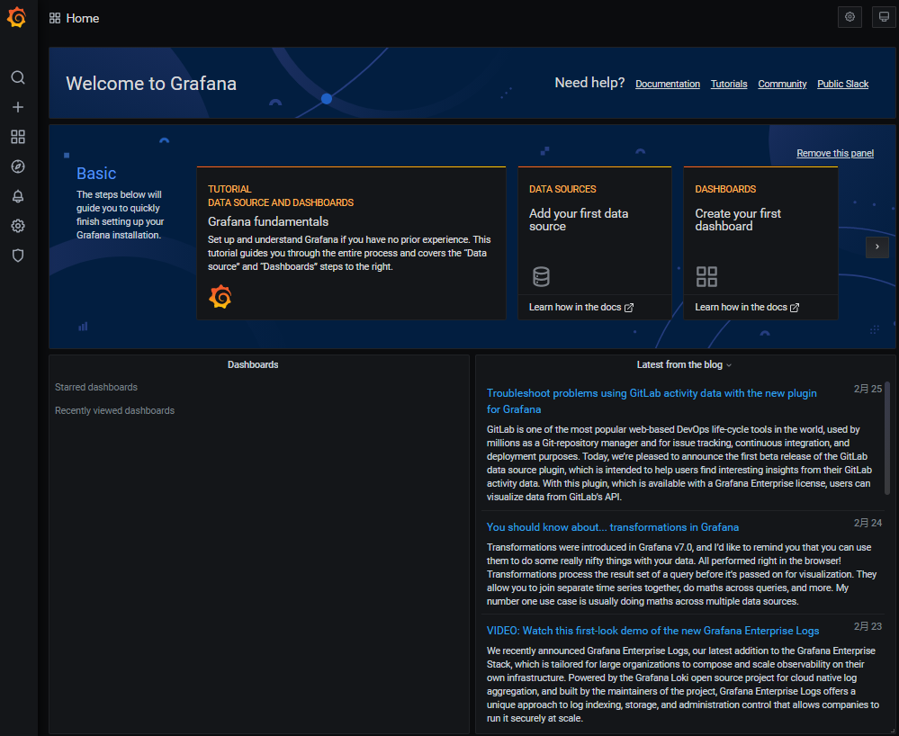
3. 配置数据源
点击Configuration -> Data Sources -> Add data source 选择InfluxDB
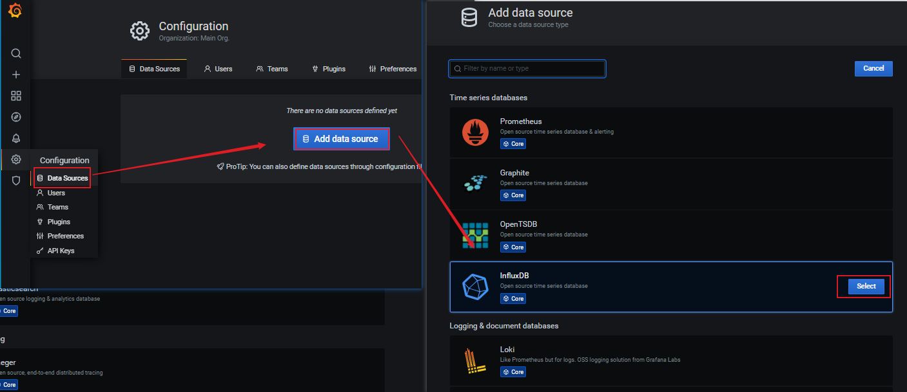
配置数据源：
1）URL设置为: http://influxdb:8086 ：容器名为influxdb，也可以使用容器的IP地址，查看IP地址方法：1
2
3
4
5
6
7
8
9
10
11[root@haiyong ~]# docker exec -it influxdb sh
# cat /etc/hosts
127.0.0.1 localhost
::1 localhost ip6-localhost ip6-loopback
fe00::0 ip6-localnet
ff00::0 ip6-mcastprefix
ff02::1 ip6-allnodes
ff02::2 ip6-allrouters
172.18.0.2 aa079b4c24cf
# exit
[root@haiyong ~]#
或者使用 docker inspect influxdb 命令查看
2）Database为 jmeter
3）Min time interval: 5
设置完成后，点击Save&Test，提示数据源设置成功
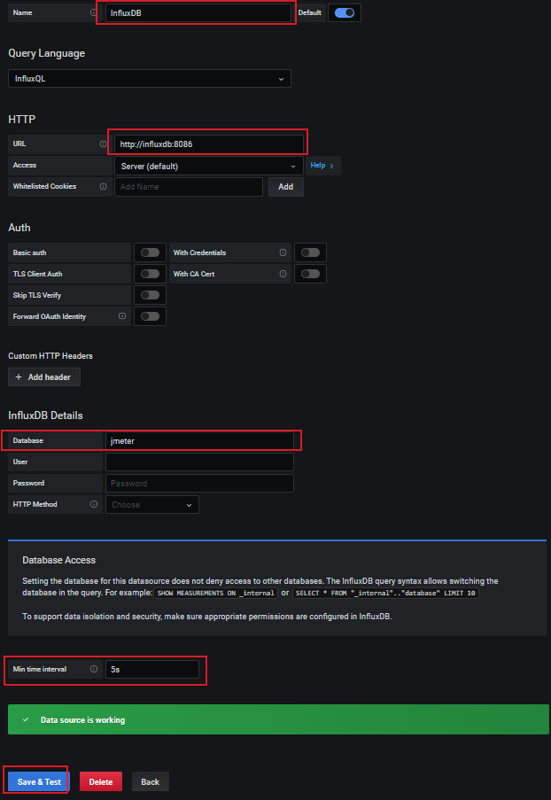
4. 选择显示面板
显示面板可以自己开发，也可以使用其他开发好的面板，在https://grafana.com/grafana/dashboards 中搜索选择。我使用的是：https://grafana.com/grafana/dashboards/5496
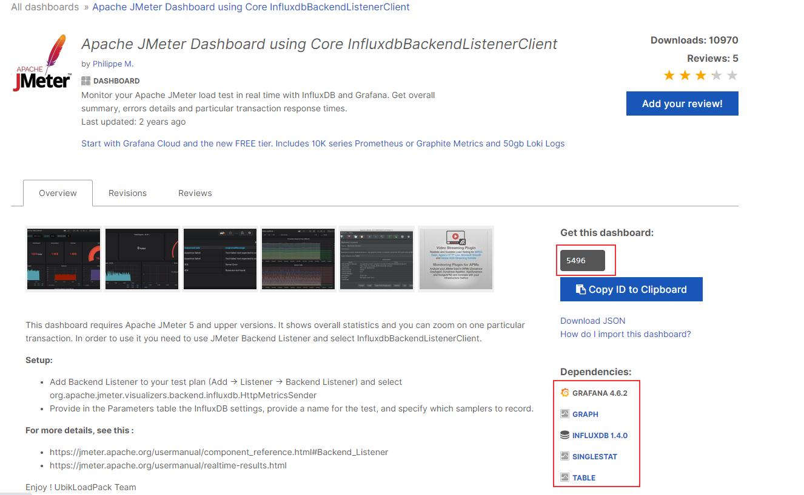
点击Dashboards -> Manage -> Import
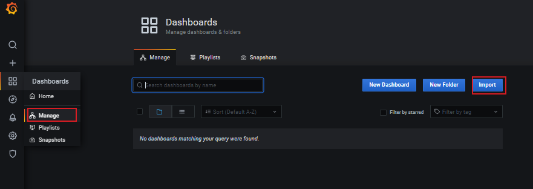
输入jmeter dashboard url，点击load，配置DB name、Measurement name和Backend send interval
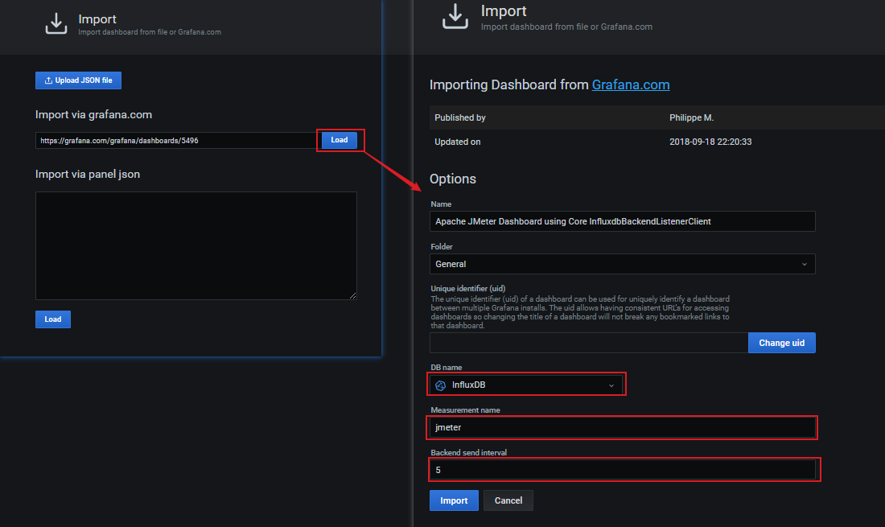
点击Import
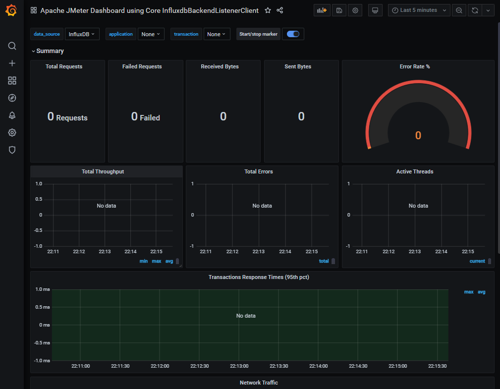
好了，InfluxDB和Grafana都配置成功了，下面配置JMeter进行压测
JMeter性能监控
在JMeter创建压测任务，创建方法可参考：JMeter性能测试：JMeter多用户并发模拟及压测结果分析
JMeter配置监听器
添加Backend Listener，Backend Listener的作用是将压测数据传到 InfluxDB中，JMeter支持 InfluxDB和Graphite数据库
Thread Group -> Add -> Listenter -> Backend Listener
Backend Listener应用选择InfluxDB
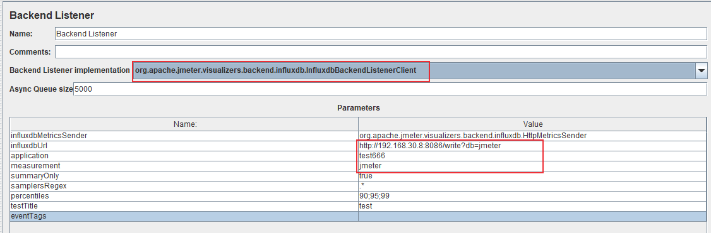
- 配置influxdbUrl：http://192.168.30.8:8086/write?db=jmeter
- application名设置为test666
- measurement名设置为jmeter
- summaryOnly：如果设置为false，在Grafana面板里面的Errors会显示错误的请求信息
配置Grafana
application名和JMeter上设置相同的名称，设置刷新时间为5s
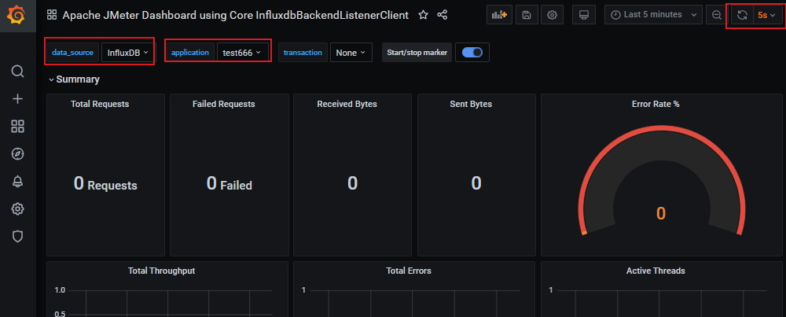
JMeter运行压测
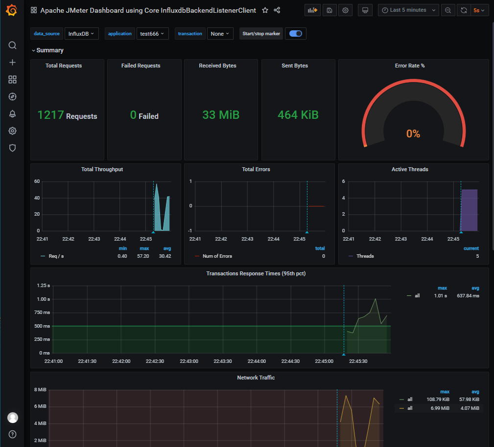
查看InfluxDB数据库
压测数据存到了InfluxDB数据库里面，Grafana显示的就是这里面的数据。1
2
3
4
5
6
7
8
9
10
11
12
13
14
15
16
17
18
19
20
21
22
23
24
25
26
27[root@server ~]# docker exec -it influxdb influx
Connected to http://localhost:8086 version 1.8.3
InfluxDB shell version: 1.8.3
>
>
> use jmeter;
Using database jmeter
> select * from jmeter limit 3;
name: jmeter
time application avg count countError endedT hit max maxAT meanAT min minAT pct90.0 pct95.0 pct99.0 rb responseCode responseMessage sb startedT statut transaction
---- ----------- --- ----- ---------- ------ --- --- ----- ------ --- ----- ------- ------- ------- -- ------------ --------------- -- -------- ------ -----------
1614435482883000000 test666 0 0 0 0 0 internal
1614435483240000000 test666 0 0 0 0 1 internal
1614435485281000000 test666 0 0 0 0 1 internal
>
> select * from events;
name: events
time application text title
---- ----------- ---- -----
1614437117192000000 test666 test started ApacheJMeter
1614437488496000000 test666 test ended ApacheJMeter
1614437552834000000 test666 test started ApacheJMeter
1614437566732000000 test666 test ended ApacheJMeter
1614437586119000000 test666 test started ApacheJMeter
1614437722290000000 test666 test ended ApacheJMeter
>
本文标题:JMeter性能监控系统：Jmeter + InfluxDB + Grafana
文章作者:hiyo
文章链接:https://hiyongz.github.io/posts/performance-testing-for-performance-monitoring-system/
许可协议:本博客文章除特别声明外，均采用CC BY-NC-ND 4.0 许可协议。转载请保留原文链接及作者。